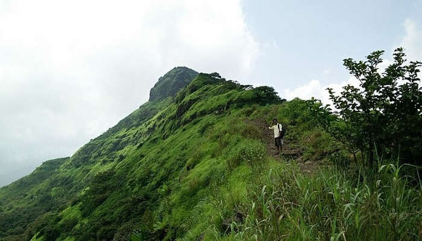

TIKONA FORT,LONAVALA

Tikona when translated means ‘triangle. 3500 feet high and pyramidal in shape Tikona Fort is located near Lonavala and offers impeccable views. Probably the most instagrammable fort in Maharashtra this fort is also a famous trekking place and is popular for its large doors. Make sure you add it to your itinerary for your Maharashtra trip.
Location: Tikona, Tikonapeth tal, dist, Mulshi, Maharashtra 412108
Entry Fees: N/A
Famous For: Sightseeing, Trekking, Photography